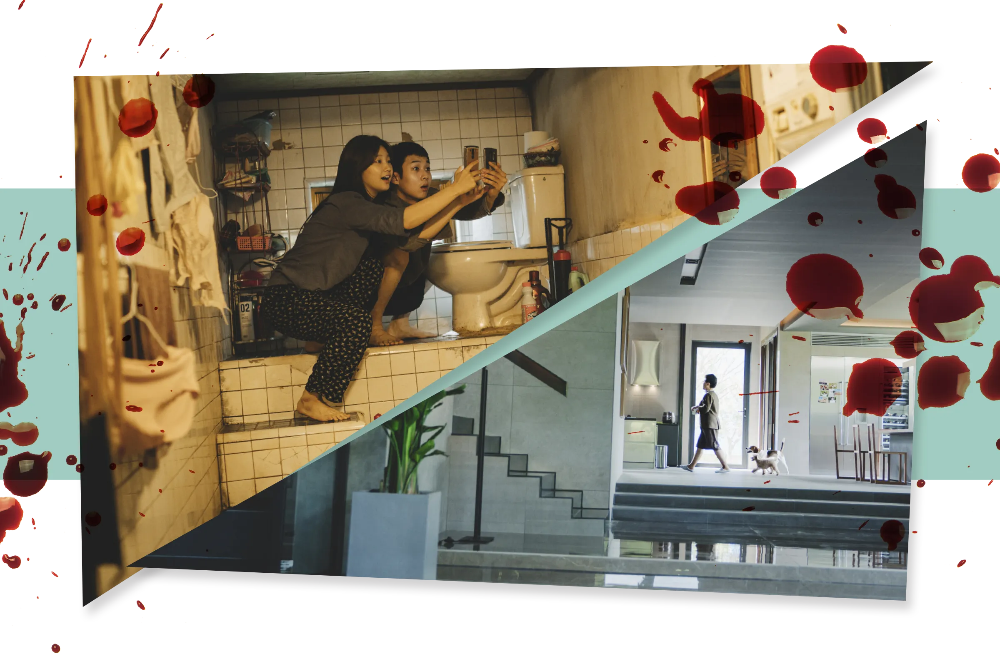

Class
One of the most evident and most consistent themes in this movie is class. We can clearly depict the differences between people based on their class and analyze them based on the class they are in. At the beginning of the movie, we are introduced to the Kim family who live under poor and bad conditions. They share a small apartment in the basement in a poor neighborhood where the four of them are struggling to provide for their basic needs. Slowly and in clever ways, each of them get jobs for the wealthy Park family, and then they realize just how different their lives are to the wealthy and comfortable lives of the Park family. As it is said in the scholarly article, "They do not become fully aware of class stratification in the society until a moment in which two, or more, classes meet" (Farahbakhsh & Ebrahimi, 2021). In Parasite, the poor and the rich are interwined in a shared world where the poor are constantly in the shadow of the rich and only then do the poor realize their situation and how replacable and irrelevant they are (Farahbakhsh & Ebrahimi, 2021). Wealth in the movie is shown in diferent ways that are both good and bad. The good way it is represented touches on how wealth makes people nicer, more brighter, and more polite. On the other hand, wealth can distort some other good qualities that are built through hardship, like good decision making and accountability. It shows that a wealthy and comfortable life can be detrimental in a way where people become softer and unable to go through hard times on their own, rather they are just looking for ways to get rid of their problems with money and not with action. That can be seen in the Park family. They are naive and helpless in many ways, and they cannot see it with their own eyes. This is exactly why the Kim's targeted the Park family to feed and live of. Still, the dream of the Kim family was always to take over the wealth of the Park family, no matter what ways they would have to use. Author of the article The Social Implications of Metaphor in Bong Joon-hoo's Parasite says, "social class, and the order that is believed to exist in a capitalist society, cannot be changed in a normal course of events, and any change, precipitated only by fraud and deception, is simply a pseudo-alternative because at the end, the poor are still creeping in the shadow of the rich, and even though the Kims seem to have temporarily replaced the owners of the house, they are soon kicked back to where they belong as underdogs"(Farahbakhsh & Ebrahimi, 2021). Moreover, an author of another article states, "The poor are getting poorer and poorer because of their lack of social resources, while the rich have been at the top of the social class in that they have access to high-quality resources for generations. Therefore, behind the gap between the rich and the poor are the gradually solidified social classes, the cruel reality that it is increasingly difficult for the poor to change their destiny" (Liu, 2020).